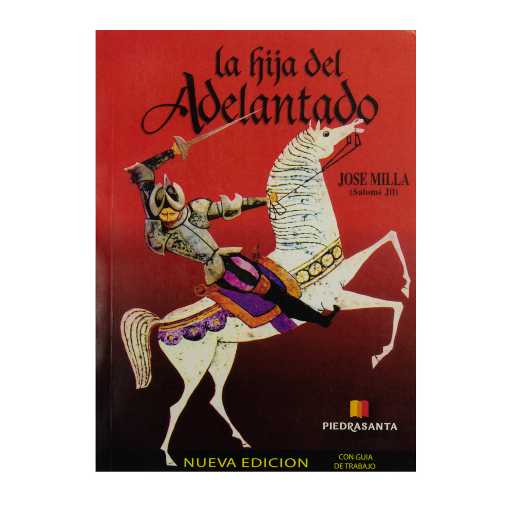
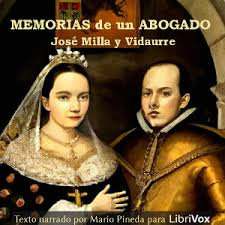
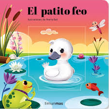

1.LA HIJA DEL ADELANTADO:Inusitada animación y extraordinario movimiento se advertían, al caer la tarde del día 15 de setiembre del año de gracia 1539, en la Ciudad de Santiago de los Caballeros de Guatemala. Personas de todas clases y condiciones iban y venían por calles y plazas, reuníanse en corrillos y agolpábanse, en mayor número, delante de un edificio grande, de dos pisos y de buena apariencia, que se levantaba en el extremo de la población más inmediato a la falda del Volcán de agua, a cuyo pie estaba situada la primitiva capital del Reino, en el mismo sitio en que hoy vemos el pobre y miserable villorrio llamado Ciudad-vieja. Ese edificio, cuyas ruinas se conservaban aún a fines del siglo XVII, según leemos en la obra inédita del cronista Fuentes y Guzmán, era el Palacio del Adelantado, Gobernador, Capitán General de estas provincias y fundador de la ciudad, Don Pedro de Alvarado. 
2.MEMORIAS DE UN ABOGADO:El huérfano Francisco Roxel es acogido por su tío, Cristóbal Roxel, quien lo fuerza a trabajar para él entre privaciones y castigos. Sin saber leer ni escribir, Francisco se enfrenta a situaciones que ponen a prueba su instinto de sobrevivencia; una de ellas lo lleva a coincidir con la familia Mallén, donde el padre, don Eusebio y la hija Teresa se vuelven importantes en su vida: Teresa le enseña a leer, surgiendo entre ellos el amor. Un día, Cristóbal Roxel es asesinado; se señala a Francisco como autor del asesinato y se le condena al cadalso, siendo salvado por un evento inesperado que lo hace tomar la decisión de convertirse en abogado. A partir de entonces, en las «memorias» de Francisco Roxel se narran sus vivencias como estudiante —traicionado por sus compañeros—, como hombre enamorado y como abogado, fiel a sus principios, cuyo final (feliz o no) es decisión del lector. 
3.El patito feo:A las pocas horas, el último huevo comenzó a romperse. Mamá Pata, todos los polluelos y los animales de la granja, se encontraban a la expectativa de conocer al pequeño que tardaba en nacer. De repente, del cascarón salió un patito muy alegre. Cuando todos lo vieron se quedaron sorprendidos, este patito no era pequeño ni amarillo y tampoco estaba cubierto de suaves plumas. Este patito era grande, gris y en vez del esperado graznido, cada vez que hablaba sonaba como una corneta vieja. 